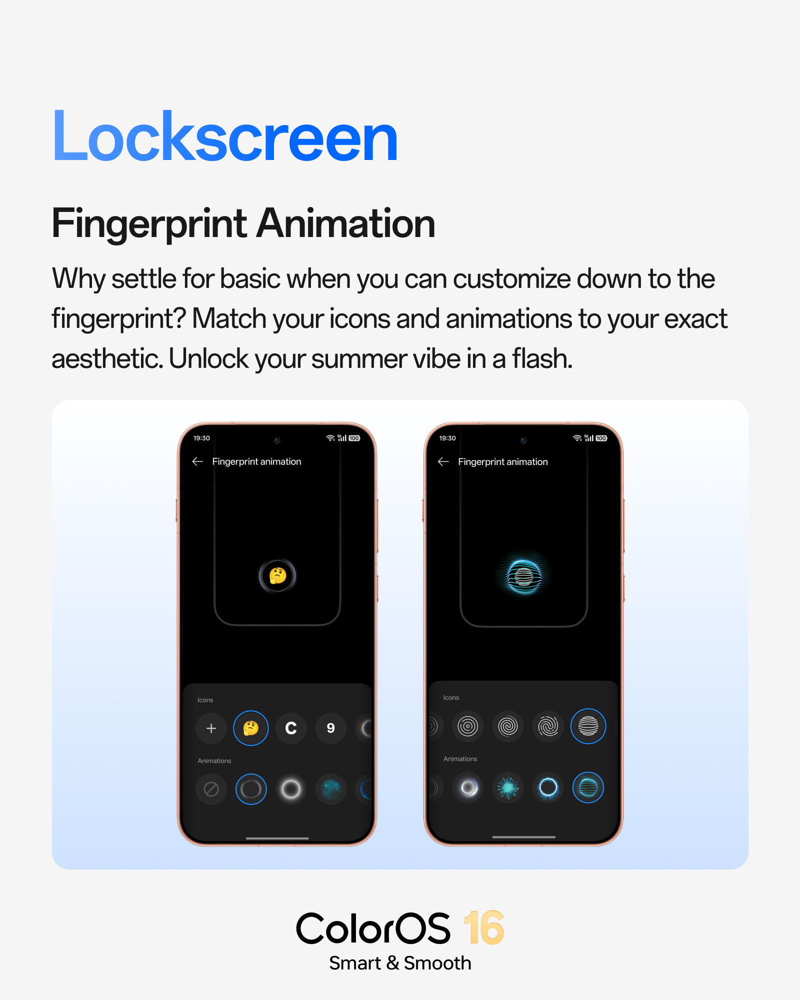
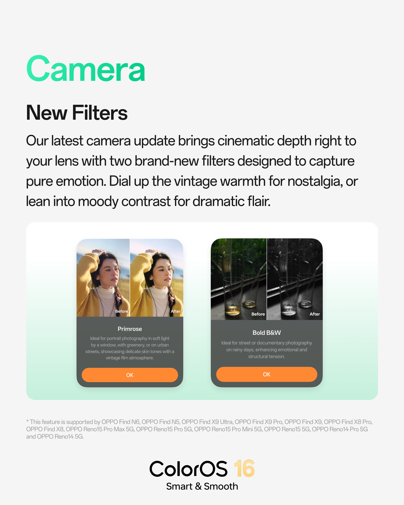

ColorOS 16 July 업데이트 출시
Oppo가 ColorOS 16의 7월 업데이트를 배포하기 시작했습니다. 이번 업데이트는 지원되는 스마트폰에 개인화 기능, 카메라 강화, 그리고 시스템 개선 사항을 포함하고 있습니다. 특히 일상적인 상호작용을 더욱 사용자 맞춤형으로 구성할 수 있도록 하는 동시에 전반적인 소프트웨어 경험을 향상시키는 데 중점을 두었습니다.
개인화 기능 강화
이번 ColorOS 16 업데이트의 핵심 추가 사항 중 하나는 지문 잠금 해제 경험을 커스터마이징할 수 있는 기능입니다. 사용자는 이제 다양한 지문 아이콘 스타일과 잠금 해제 애니메이션 중에서 선택하여 본인의 취향에 맞게 조합할 수 있습니다.
또한, Contact Poster 미리보기 지원이 추가되어 전화가 올 때 적용될 Contact Poster를 미리 확인하고 편리하게 설정할 수 있게 되었습니다.
카메라 기능 개선
기본 카메라 앱에 Primrose와 Bold B&W라는 두 가지 새로운 필터가 추가되었습니다. Primrose는 따뜻한 느낌의 이미지를 연출하는 데 적합하며, Bold B&W는 흑백 사진을 위한 모노크롬 스타일을 제공합니다. 이 필터들은 기본 카메라 앱 내에서 직접 사용할 수 있어, 별도의 서드파티 앱 없이도 더욱 창의적인 촬영 옵션을 제공합니다.
시스템 및 성능 최적화
7월 업데이트를 통해 최근 작업(Recent Tasks) 화면에서 앱을 실행하거나 전환할 때 더욱 부드러운 전환 애니메이션이 적용됩니다.
또한, Face Unlock 기능에 보용 프로필 지원이 추가되어 안경이나 메이크업을 한 상태에서도 인식률을 높일 수 있도록 개선되었습니다. 이 외에도 전반적인 시스템 안정성 향상과 성능 최적화가 포함되어 더욱 매끄러운 일상 사용 경험을 제공합니다.
지원 기기 목록
ColorOS 16 July 업데이트는 다음 모델에 단계적으로 배포됩니다.
- Find X9 Ultra
- Find X9s
- Find X9 Pro
- Find X9
- Reno 15 Pro 5G
- Reno 15 5G
- Reno 14 Pro 5G
- Reno 14 5G
이전 단계적 배포와 마찬가지로, 기기 모델과 지역에 따라 업데이트 적용 시점이 다를 수 있습니다.
총평
이번 ColorOS 16 July 업데이트는 사용자 맞춤형 인터페이스 강화와 카메라 기능 개선, 그리고 시스템 안정성 확보에 중점을 두었습니다. 특히 지문 잠금 애니메이션과 보조 Face Unlock 프로필 추가 등 실질적인 편의성을 높이는 요소들이 포함되어 더욱 쾌적한 사용 환경을 제공할 것으로 기대됩니다.
ColorOS 16 七月更新发布
Oppo 已开始推送 ColorOS 16 的七月更新。此次更新涵盖了支持机型的个性化功能、相机增强以及系统改进，旨在让日常交互更符合用户定制需求，同时提升整体软件体验。
个性化功能增强
本次 ColorOS 16 更新的核心内容之一是可自定义的指纹解锁体验。用户现在可以从多种不同的指纹图标样式和解锁动画中进行选择，并根据个人喜好进行组合。
此外，还增加了“联系人海报（Contact Poster）”预览支持，方便用户在来电时预先查看并便捷地设置对应的联系人海报。
相机功能改进
原生相机应用新增了两种新滤镜：Primrose 和 Bold B&W。Primrose 适用于营造温馨氛围的图像，而 Bold B&W 则提供适合黑白照片的单色风格。这些滤镜可直接在系统自带的相机应用中调用，无需第三方应用即可获得更多创意拍摄选项。
系统与性能优化
通过此次七月更新，在“最近任务（Recent Tasks）”界面中启动或切换应用程序时，将采用更平滑的过渡动画。
此外，面部解锁功能新增了辅助配置文件支持，旨在提高佩戴眼镜或化妆后的识别率。同时，系统还包含整体稳定性提升和性能优化，提供更加流畅的日常使用体验。
支持设备列表
ColorOS 16 七月更新将逐步推送至以下机型：
- Find X9 Ultra
- Find X9s
- Find X9 Pro
- Find X9
- Reno 15 Pro 5G
- Reno 15 5G
- Reno 14 Pro 5G
- Reno 14 5G
与之前的分阶段推送一样，更新的具体时间可能会因设备型号和地区而异。
总结
此次 ColorOS 16 七月更新重点在于强化用户自定义界面、提升相机功能以及保障系统稳定性。通过增加指纹解锁动画定制和面部识别辅助配置文件等实用功能，旨在为用户提供更流畅且个性化的使用环境。
ColorOS 16 7月アップデートのリリース
OppoがColorOS 16の7月アップデートの配信を開始しました。今回のアップデートでは、対応するスマートフォン向けにパーソナライズ機能、カメラ機能の強化、およびシステム改善が含まれています。特に、日常的な操作をよりユーザーの好みに合わせてカスタマイズできるようにすると同時に、全体的なソフトウェア体験の向上に重点を置いています。
パーソナライズ機能の強化
今回のColorOS 16アップデートにおける主要な追加要素の一つは、指紋認証のロック解除体験をカスタマイズできる機能です。ユーザーは、さまざまな指紋アイコンのスタイルやロック解除のアニメーションから選択し、自分の好みに合わせて組み合わせることが可能になります。
また、Contact Posterのプレビューサポートが追加され、着信時に表示されるContact Posterを事前に確認し、便利に設定できるようになりました。
カメラ機能の改善
標準カメラアプリに「Primrose」と「Bold B&W」という2つの新しいフィルターが追加されました。Primroseは温かみのある画像を演出するのに適しており、Bold B&Wは白黒写真のためのモノクロームスタイルを提供します。これらのフィルターは標準のカメラアプリ内で直接使用できるため、サードパーティ製アプリを使用することなく、よりクリエイティブな撮影オプションを楽しむことができます。
システムおよびパフォーマンスの最適化
7月のアップデートにより、「最近のタスク（Recent Tasks）」画面でアプリを実行または切り替える際に、よりスムーズな遷移アニメーションが適用されます。
また、Face Unlock機能に「補助プロファイル」のサポートが追加され、眼鏡やメイクを施した状態でも認識率を高められるよう改善されました。これらに加え、全体的なシステムの安定性の向上とパフォーマンスの最適化が含まれており、よりスムーズな日常の操作体験を提供します。
対応デバイスリスト
ColorOS 16 Julyアップデートは、以下のモデルに段階的に配信されます。
- Find X9 Ultra
- Find X9s
- Find X9 Pro
- Find X9
- Reno 15 Pro 5G
- Reno 15 5G
- Reno 14 Pro 5G
- Reno 14 5G
以前の段階的な配信と同様に、デバイスモデルや地域によってアップデートの適用タイミングが異なる場合があります。
まとめ
今回のColorOS 16 Julyアップデートは、指紋認証のカスタマイズやFace Unlockの認識精度向上など、ユーザーの利便性を高める機能とシステム安定性の向上に重点を置いています。また、新フィルターの追加によるカメラ機能の強化も含まれており、より快適でパーソナライズされた操作環境が提供されます。
ColorOS 16 July Update Released
Oppo has begun rolling out the July update for ColorOS 16. This update includes a variety of personalization features, camera enhancements, and system improvements designed to provide a more tailored experience while improving overall software performance.
Enhanced Personalization Features
One of the key additions in this ColorOS 16 update is the ability to customize the fingerprint unlock experience. Users can now choose from various fingerprint icon styles and unlock animations to match their personal preferences.
Additionally, support for Contact Poster previews has been added, allowing users to preview and conveniently set up a Contact Poster when an incoming call occurs.
Camera Enhancements
Two new filters, "Primrose" and "Bold B&W," have been added to the native camera app. Primrose is designed to create images with a warm feel, while Bold B&W provides a monochrome style for black-and-white photos. These filters are integrated directly into the default camera app, providing more creative options without the need for third-party applications.
System and Performance Optimization
The July update introduces smoother transition animations when launching or switching between apps in the Recent Tasks screen.
Furthermore, Face Unlock now supports secondary profiles to improve recognition accuracy even when wearing glasses or makeup. The update also includes general system stability improvements and performance optimizations to provide a smoother daily user experience.
Supported Devices
The ColorOS 16 July update is being rolled out in stages to the following models:
- Find X9 Ultra
- Find X9s
- Find X9 Pro
- Find X9
- Reno 15 Pro 5G
- Reno 15 5G
- Reno 14 Pro 5G
- Reno 14 5G
As with previous staged rollouts, the timing of the update may vary depending on the specific device model and region.
Summary
The ColorOS 16 July update focuses on enhancing user personalization through customizable fingerprint animations and Contact Poster previews. It also introduces new camera filters and improves system performance with smoother transitions and more robust Face Unlock recognition.

